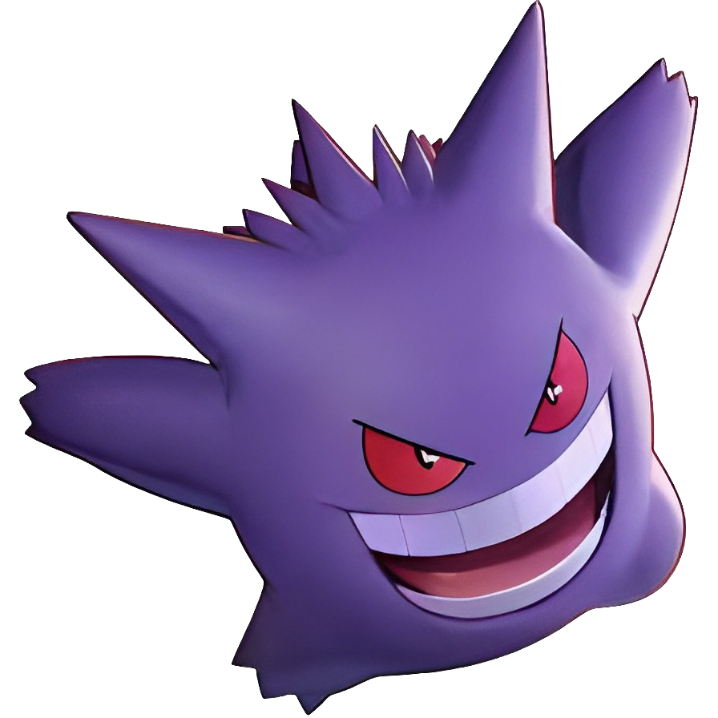
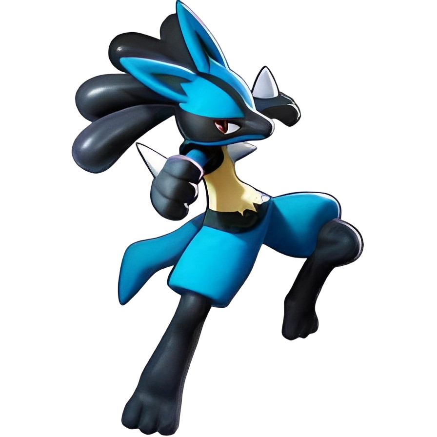

-
Pikachu
HP 250
Descrição
Os Pikachus são pequenos roedores de quarenta centímetros e de seis quilogramas, com um corpo redondo, pernas curtas e uma longa cauda, quando macho, a cauda tem um formato de um raio, mas se o Pikachu for fêmea sua cauda ganha um coração na ponta.
-
Charizard
HP 800
Descrição
Geralmente, um Charizard é competitivo. Ele adora a batalha e seu espírito competitivo também é notável, uma vez que nunca vai cuspir fogo em um inimigo mais fraco a menos que provocado ou ordenado. Quando fica muito irritado, as chamas em sua cauda se tornam branco-azuladas.
-
Mewtwo
HP 1200
Descrição
Mewtwo foi criado geneticamente em um laboratório, sendo um clone do misterioso antigo Pokémon Mew. É uma criatura com uma postura humanoide, mas tem algumas características felinas.
-
Garchomp
HP 950Descrição
Garchomp é um Pokémon Dragão e Terra extremamente poderoso e temido. Com sua aparência intimidante, possui uma cabeça afiada e dentes afiados, capazes de triturar qualquer coisa que cruzar seu caminho. Sua velocidade e agilidade são notáveis, permitindo-lhe se mover rapidamente e surpreender seus oponentes. As escamas duras que cobrem seu corpo oferecem uma excelente proteção contra ataques adversários. Garchomp é conhecido por sua habilidade de cavar túneis subterrâneos em alta velocidade, tornando-se um predador furtivo e eficaz. Com suas poderosas mandíbulas e garras afiadas, pode infligir danos devastadores em batalhas. Além disso, é capaz de utilizar ataques elementais, como o terrível "Dragon Claw" e o devastador "Earthquake", para derrotar seus adversários. Embora Garchomp seja um Pokémon feroz e temido, ele também possui um lado leal e protetor, defendendo aqueles que considera parte de sua família. Aqueles que conseguem ganhar sua confiança encontrarão em Garchomp um aliado implacável e valioso. Com sua combinação única de força, velocidade e habilidades elementais, Garchomp é um dos Pokémon mais formidáveis e respeitados em batalhas. Aqueles que ousam enfrentá-lo devem estar preparados para um desafio épico e incansável!
-
Gengar
HP 750Descrição
Gengar é um Pokémon do tipo Fantasma conhecido por sua natureza travessa e assombrosa. Com sua aparência sombria e sinistra, Gengar é capaz de se fundir nas sombras e se mover silenciosamente, aproveitando-se do medo e do pânico que causa em suas vítimas. Sua figura flutuante e sorriso malicioso evocam um sentimento de mistério e intriga. Gengar é mestre em habilidades de dissimulação e manipulação. Ele adora pregar peças em pessoas desavisadas, assombrando casas abandonadas e provocando sustos em viajantes noturnos. Sua habilidade especial, a "Levitate", permite-lhe pairar no ar, tornando-o imune a ataques de tipo Terra. Além de suas habilidades travessas, Gengar é um adversário formidável em batalhas. Ele é conhecido por lançar poderosos feitiços de tipo Fantasma, como o temido "Shadow Ball", capaz de causar danos psíquicos aos oponentes. Com sua mente afiada e sua natureza ardilosa, Gengar é capaz de traçar estratégias astutas para derrotar seus adversários. Embora Gengar seja muitas vezes associado a energia negativa e malícia, ele também pode ser um companheiro leal para aqueles que o conquistam. Aqueles que demonstram coragem e respeito podem encontrar em Gengar um aliado poderoso e confiável. Gengar é um Pokémon envolto em mistério e encanto sombrio. Sua natureza inquieta e habilidades assustadoras fazem dele uma adição intrigante e formidável à sua equipe. Aventure-se ao lado de Gengar e descubra o mundo oculto e misterioso do tipo Fantasma!
-
Lucario
HP 550Descrição
Lucario é um Pokémon do tipo Lutador e Aço conhecido por sua força interior e habilidades excepcionais de combate. Com seu olhar penetrante e postura confiante, Lucario irradia uma aura de determinação e sabedoria. Sua aparência elegante e atlética combina perfeitamente com sua natureza ágil e poderosa. Lucario possui uma capacidade especial chamada "Aura Reading", que lhe permite sentir e ler as auras dos seres vivos ao seu redor. Com essa habilidade, ele pode entender as emoções e os pensamentos das pessoas e Pokémon, permitindo-lhe antecipar movimentos e reações durante as batalhas. Esse Pokémon é conhecido por seu estilo único de luta, combinando ataques físicos precisos com poderosos golpes de aura. Seus movimentos característicos, como o "Aura Sphere", concentram a energia vital ao seu redor e a transformam em uma esfera de poder concentrado, capaz de atingir seus oponentes com grande impacto. Além de suas habilidades de combate, Lucario é um Pokémon leal e protetor. Ele valoriza profundamente os laços de amizade e está disposto a arriscar tudo para proteger aqueles que ama. Sua inteligência excepcional e senso de justiça o tornam um aliado confiável e um líder respeitado. Lucario também possui uma forma evoluída chamada Mega Lucario, que ocorre quando ele está em sincronia máxima com sua aura. Nessa forma, seu poder é amplificado e sua conexão com a aura se torna ainda mais intensa, permitindo-lhe realizar ataques devastadores. Se você estiver em busca de um parceiro de batalha confiável e sábio, Lucario é a escolha certa. Sua combinação única de força, agilidade e poder espiritual o torna uma adição formidável à sua equipe. Explore o poder da aura ao lado de Lucario e desvende seus segredos mais profundos!
-
Blastoise
HP 590
Descrição
Blastoise é um Pokémon do tipo Água e uma verdadeira força a ser reconhecida. Com sua aparência imponente e seu casco resistente, Blastoise é conhecido como o 'Guerreiro dos Oceanos'. Sua postura firme e olhar determinado refletem sua natureza protetora e poderosa. O casco de Blastoise serve como uma fortaleza, oferecendo-lhe proteção contra ataques e permitindo-lhe resistir aos mais poderosos golpes. Sua capacidade de lançar jatos de água com incrível pressão a partir dos canhões localizados em seu casco torna-o um adversário formidável tanto em terra quanto na água. Blastoise é um estrategista nato, capaz de planejar suas ações com precisão milimétrica durante as batalhas. Seu conhecimento tático e habilidades de combate fazem dele um líder valioso em qualquer equipe. Ele pode usar uma variedade de movimentos de água, como o poderoso "Hydro Pump", para derrubar seus oponentes com torrentes de água poderosas. Além de suas habilidades de batalha, Blastoise é um Pokémon leal e carismático. Ele protege seu território com devoção e é conhecido por defender os mais fracos. Sua personalidade calma e equilibrada torna-o um companheiro confiável em qualquer jornada. Blastoise também possui uma Mega Evolução chamada Mega Blastoise. Nessa forma, os canhões em seu casco se fundem em um único canhão maior, aumentando seu poder destrutivo. Com sua Mega Evolução, Blastoise se torna um verdadeiro colosso dos mares, capaz de devastar seus oponentes com ataques ainda mais poderosos. Se você está em busca de um Pokémon resiliente, poderoso e protetor, Blastoise é a escolha perfeita. Sua presença imponente e habilidades impressionantes farão com que ele se destaque em batalhas e se torne um aliado inestimável em sua jornada Pokémon.
-
Greninja
HP 755
Descrição
Greninja é um Pokémon do tipo Água e Noturno, conhecido por sua natureza ágil e sua habilidade excepcional de camuflagem. Com seu corpo elegante e movimentos rápidos como um raio, Greninja é uma mistura perfeita de graça e força. Greninja é especialista em combates táticos, utilizando sua habilidade única chamada "Protean". Essa habilidade permite que ele mude instantaneamente seu tipo de acordo com o movimento que está prestes a usar, tornando-se imprevisível e dificultando a vida de seus oponentes. Sua agilidade e reflexos afiados permitem que ele evite ataques com facilidade e contra-ataque com velocidade surpreendente. Além de suas habilidades de combate, Greninja é um mestre da camuflagem. Ele pode se fundir com as sombras e se tornar praticamente invisível, permitindo que ele se mova silenciosamente e ataque seus oponentes sem ser detectado. Essa habilidade o torna um espião eficaz e um aliado valioso em missões secretas. Greninja também possui um ataque especial chamado "Water Shuriken", em que ele dispara estrelas de água afiadas em seus oponentes com precisão letal. Essa técnica é uma das principais armas de Greninja em batalhas, capaz de causar danos significativos aos adversários. Além de sua destreza física, Greninja também é um Pokémon astuto e inteligente. Ele observa cuidadosamente os movimentos de seus oponentes e planeja estratégias para vencê-los. Sua lealdade e determinação são inabaláveis, tornando-o um parceiro confiável em qualquer situação. Greninja também pode megaevoluir para a forma chamada "Ash-Greninja", em que seu corpo se transforma em uma versão mais poderosa e intensa. Nessa forma, seus sentidos ficam amplificados e sua força atinge seu auge, permitindo que ele supere até mesmo os oponentes mais desafiadores. Se você está em busca de um Pokémon versátil, ágil e astuto, Greninja é a escolha perfeita. Sua combinação única de habilidades de combate, camuflagem e estratégia o torna um adversário formidável e um parceiro valioso em qualquer equipe
-
Rayquaza
HP 1300
Descrição
Rayquaza é um lendário Pokémon do tipo Dragão e Voador, conhecido como o guardião dos céus. Sua imponente aparência e poderoso rugido inspiram admiração e respeito em todos que o encontram. Ele é conhecido como o Pokémon Celeste que voa pelos céus, trazendo equilíbrio e ordem à natureza. Rayquaza possui uma constituição física incrível, com um corpo longo e aerodinâmico que lhe permite voar a velocidades incríveis. Ele é capaz de cruzar os céus com graça e agilidade sem precedentes, superando até mesmo as correntes de vento mais fortes. Seus movimentos são tão fluidos que parecem uma dança no ar. Este lendário Pokémon também possui uma habilidade única chamada "Air Lock", que lhe permite controlar e manipular as condições atmosféricas ao seu redor. Com um simples bater de suas asas, ele pode acalmar tempestades violentas, dispersar nuvens carregadas e até mesmo controlar a intensidade da luz solar. Rayquaza é verdadeiramente um mestre dos elementos. Rayquaza também é conhecido por sua incrível força e poder de combate. Seu ataque especial chamado "Outrage" o permite liberar uma fúria desenfreada, atacando implacavelmente seus oponentes com golpes devastadores. Além disso, ele possui o movimento exclusivo chamado "Dragon Ascent", um ataque poderoso que permite que ele assuma sua forma Mega Evolution, tornando-se ainda mais poderoso e imponente. Este Pokémon lendário é reverenciado por sua sabedoria e sua capacidade de mediar conflitos entre outros Pokémon lendários. Sua presença é vista como um sinal de equilíbrio e harmonia no mundo Pokémon. Aqueles que têm a oportunidade de testemunhar a majestade de Rayquaza ficam fascinados e inspirados por sua grandiosidade. Rayquaza é um símbolo de poder e majestade. Seu espírito livre e seu papel como guardião dos céus o tornam um Pokémon lendário verdadeiramente especial. Aqueles que são dignos o suficiente para se tornar parceiros de Rayquaza encontrarão um aliado poderoso e leal, capaz de proteger e guiar em suas jornadas.